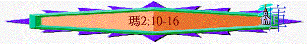

|
信 仰 的 喚 醒 |
||||||||||||
|
引 言 |
在關係上神愛他們 |
在事奉上藐視神 |
在盟約上不忠貞 |
在言語上煩瑣神 |
在奉獻上奪供物 |
在話語上頂撞神 |
||||||
|
1:1 |
1:2-5 |
1:6-2:9 |
2:10-16 |
2:17-3:6 |
3:7-12 |
3:13-4:6 |
||||||
三）在盟約上不忠貞（２：１０－１６）
１）喚醒－「猶太人行事詭詐」
（ｖ10、ｖ11、ｖ14、ｖ15）ａ）「詭詐」的意思
ｉ）耶９：２－８
ｉｉ）ＮＡＳ：「treacherously」
ｂ）誠實的重要
ｉ）在敬拜上需要誠實（約４：２３）
ｉｉ）在聽道上需要誠實（路８：１５）
ｉｉ）在言語上需要誠實（民３０：１－２，太５：３７）
ｉｖ）在人品上需要誠實（腓１：１０）
ｃ）詭詐的結果
２）不知「你們還說，這是為什麼呢？」
（ｖ．１４）３）講解
ａ）對弟兄行詭詐
（ｖ．１０）＊不對之原因
ｉ）「豈不都是一位父」
ｉｉ）「背棄神與我們祖宗所立的約」（利１９：１１－１２）
ｂ）對父神行詭詐
（ｖ．１１－１２）－娶事奉外邦神的女子為妻
＊為何是可憎的事？
ｉ）父神－ 愛聖潔（林後６：１４－１８）
ｉｉ）女子－ 不潔淨
ｉｉｉ）選民－ 卻褻瀆
ｉｖ）盟約－ 終廢棄（申７：３）
ｖ）全群－ 變混雜（拉９：１－２）
ｃ）對妻子行詭詐
（ｖ．１３－１６）ｉ）妻子的哭泣
ｉｉ）父神的回應
ｉｉｉ）丈夫的惡行
（１）休妻
（２）另娶
（ａ）從起初的角度
（ｂ）從日後的看法
（３）強暴
ｉｖ）應有的表淚
（１）謹守己心
（２）忠於盟約